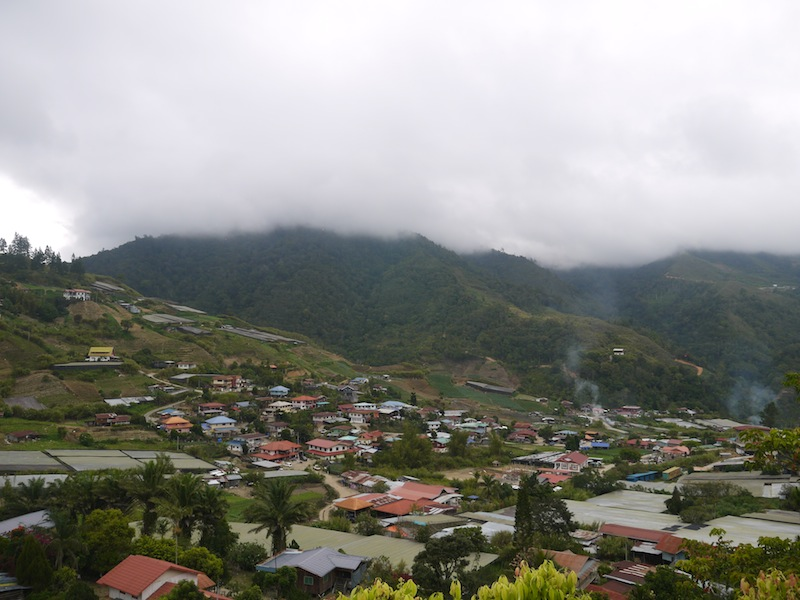
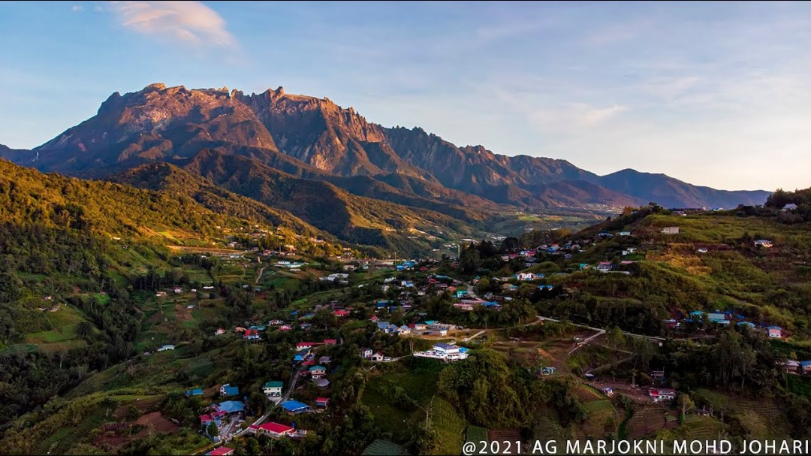

Kundasang is a small town located in the district of Ranau, Sabah, Malaysia. Situated at an
altitude of over 1,900
meters above sea level, it is a highland destination known for its cool weather,
breathtaking views of Mount Kinabalu,
and peaceful atmosphere far from the hustle and bustle of city life.
Located just about 6 km from Kinabalu National Park, Kundasang serves as a popular stopover
for tourists who want
to admire or climb the iconic Mount Kinabalu. Its natural beauty, lush green landscape, and
rural charm make it one of
the most beloved travel spots in Sabah.

Desa Dairy Farm terletak di Kundasang, Sabah dan dikenali sebagai “New Zealand versi
Malaysia” kerana cuaca sejuk dan
pemandangan indah berlatarbelakangkan Gunung Kinabalu. Ia merupakan ladang tenusu moden yang
menempatkan lembu baka
Friesian-Holstein dari New Zealand.
Pengunjung boleh melihat proses pemerahan susu, memberi makan haiwan, serta mencuba produk
tenusu segar seperti susu
pelbagai perisa, yogurt dan ais krim. Ladang ini sesuai untuk lawatan keluarga, pelajar dan
pelancong yang ingin
menikmati suasana tanah tinggi yang nyaman.
Terletak hanya beberapa kilometer dari pekan Kundasang, Desa Dairy Farm merupakan salah satu
tarikan utama dalam
sektor agro-pelancongan Sabah dan destinasi wajib singgah bagi pengunjung ke kawasan ini.